Leadership team
Leadership team – Group and SLT
Mr K A Kiththi Perera
Group Chief Enterprise and Wholesale Officer and Acting Chief Commercial Officer
Mr Perera joined SLT in 1994. He holds an MEng from University of Moratuwa in Electronics and Telecommunications Engineering and is a Chartered Engineer of the Institute of Electrical Engineers and Engineering Council (UK). He has extensive experience in International Transmission Systems, Submarine Cable Systems, Data and IP Networking, and Project Management.
He counts over 12 years of experience in the enterprise and Government customer segments. In addition, he was instrumental in introducing Metro Ethernet Technology to Sri Lanka. Mr Perera has provided voice-data integrated enterprise solutions connected with high speed resilient connectivity services to many customers.
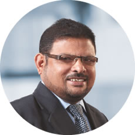
Mr M B P Fernandez
Chief Network Officer and Acting Chief Technology Officer
Mr Fernandez joined SLT in 1991; following his roles in various multinational telecommunications organisations. He holds a BSc (Eng.) in Electronics and Telecommunications from the University of Moratuwa, Sri Lanka; and an MBA from the University of Sri Jayewardenepura, Sri Lanka. He is a Chartered Engineer and Fellow of The Institution of Engineers Sri Lanka.
His 30-year career as a professional in telecommunication industry records over 600 days attendance for overseas trainings, seminars, and various forums organised by international training institutions, including international telecommunication operators and reputed telecommunication equipment vendors.
He has held a string of senior positions within SLT, culminating in his current position as the Acting Chief Technology Officer. In this role he oversees entire planning, operation and maintenance of SLT network and projects of SLT in Sri Lanka. In addition, he has overseen the design, implementation and operation of SLT's Call Centre in line with improving customer experience. He has played a leading role for planning and deploying very large scale programmes for SLT Network transformation. New Generation Network (NGN), Sri Lanka Backbone Network (SLBN), Fiber To The Home (FTTH), LTE (4G), National Broadband Programme (i-Sri Lanka), National Data Centre, and Submarine Cable Systems are some of the flagship projects in which he made his contributions felt.
He is also a member of the International Management Committee for the submarine cable consortium of SEA-ME-WE 3, 4 and 5, Dhiraagu Cable, and the Bharath Lanka Submarine Cable System. He additionally serves as a management committee member under the South-East Asia and Indian Ocean Cable Maintenance Agreement (SEAIOCMA). He is a permanent member of Senior Tender Board of SLT.
Mr Fernandez is a permanent member of the Technical Subcommittee of SLT since 2011. He also functions as a Non-Executive Director of SLT Services Limited since 2007.
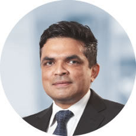
Mr Mahinda B Herath
Group Chief Planning Officer
Mr Herath is a Chartered Engineer with an Honours Degree in Engineering from the University of Moratuwa and a Master’s Degree in Industrial Mathematics from the University of Sri Jayewardenepura. In his career at SLT spans over 33 years. He has gained multidisciplinary exposure in the fields of Engineering, Management, Regulation, and Business. He has previously held a number of senior positions at SLT, including the Chief Planning Officer, General Manager, International Business, General Manager, Regulatory Affairs, and Deputy General Manager, Colombo Metro. Mr Herath has gained extensive training offered by reputed international operators, including Telia AB of Sweden, France Telecom, AT&T of USA, and KDD of Japan. He has also gained certifications in Telecommunication Regulation from the Commonwealth Telecommunications Organisation (CTO), Australian Communication and Media Authority (ACMA), and University of Florida. He has also been involved in the activities of ITU study groups, Sri Lanka Association for the Advancement of Science (SLAAS), and International Development Research Centre (IDRC), with several research papers and a book chapter to his credit. Mr Herath is currently heading the Planning Group which is being developed as a centre of excellence in strategy and planning for both network and information technology, spanning the entire SLT Group. He also provides leadership to SLT Group's ongoing Digital Transformation.
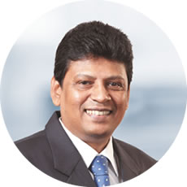
Mr Ajantha Seneviratne
Group Chief Marketing Officer
Mr Seneviratne joined SLT in 1993. He holds a BSc in Electronics and Telecommunications from the University of Moratuwa and a Postgraduate Diploma in Industrial Engineering from OUSL. In addition, he holds an MBA from the University of Sri Jayewardenepura. He is a Chartered Engineer and a member of The Institution of Engineers Sri Lanka as well. He counts over 15 years of experience in marketing. He is also the Chief Executive Officer of SLT VisionCom (Private) Limited.

Mr Saman Perera
Group Chief Information Officer
Mr Perera with over 24 years of experience in telecommunication industry has extensive experience in the full spectrum of Strategic IT Management, ranging from Systems and Technology Strategy, Software Development, Operations, Business Process Innovation, HRM to Risk, and IT Investment. Prior to his appointment as the Group CIO, he served as Senior General Manager – Information Systems at Mobitel transforming its IT Group to a key strategic unit that shaped Mobitel’s business and its entire value chain by infusing a powerful professional IT team that fuelled many innovations in digital services while bringing down TCO for many critical systems.
He holds an MBA in Management of Technology from University of Moratuwa, MSc in Computer Science from University of Colombo and BSc from University of Colombo. He serves as a resource person for MBA in Information Technology at University of Moratuwa, served as a visiting Lecturer for Postgraduate Diploma/MBA in Information Systems Management, Faculty of Graduate Studies at University of Colombo. He is currently serving as a member of the Faculty Board of the Faculty of Engineering, University of Moratuwa as an industry representative. He is an active member of Computer Society of Sri Lanka.
Mr Chandrasiri Kalupahana
Group Chief Internal Auditor
Mr Kalupahana joined SLT in September 2016 as the Group Chief Internal Auditor. Immediately prior to joining SLT, he was the Chief Financial Officer at Regional Development Bank which is a 100% Government-owned bank having 265 branches island wide.
He has worked as Head of Audit at several companies. In addition, he has held senior positions at both local and overseas companies serving at a number of key positions including; Chief Financial Officer, Senior Deputy General Manager and General Manager/CEO in the fields of Banking, Finance, Insurance, Manufacturing, Civil Engineering, Aviation, Trading, Entertainment, Auto Mobile etc. He has more than 34 years experience in both private and public sector. He holds valuable international exposure working in British, American and Irish Companies for several years in countries such as Tanzania, Angola/UK and Saudi Arabia, in addition to Companies in Sri Lanka. He had worked as the CEO/GM for three regulated Companies; an American Company in Tanzania, British Company in Angola/UK and Insurance Company in Sri Lanka.
He is a Fellow member of The Institute of Chartered Accountants of Sri Lanka (CA Sri Lanka) trained at KPMG – Sri Lanka and a Fellow member of the Association of Accounting Technicians of Sri Lanka, a Fellow member of the Professional Managers of Sri Lanka and had membership at the Board of Certified Public Accountants & Auditors of Tanzania whilst he was employed there. He has received extensive local and overseas training in different fields.
Mr Kalupahana is a Council member of CA Sri Lanka appointed for 2018/19.
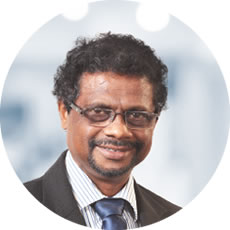
Mr Tilak De Silva
Chief Business Innovation and Development Officer
Mr De Silva joined SLT in 1984 and counts over 34 years of experience in IT and Communication sectors. He is a pioneer in transforming SLT to an IT-enabled company. He has gained multidisciplinary exposure in the fields of engineering, information technology and global telecom business. Mr De Silva has held key positions including Head of IT, Chief Global Officer, Chief Network Officer, and Advisor to CEO on Technology Strategies at SLT. He has also held the position of CEO, SLT Hong Kong which was a subsidiary of SLT. He introduced latest residential fibre optic technology, Fibre To The Home (FTTH) to SLT. Currently, he is the in charge of Information Security, Quality Management, and Business Innovation.
Mr De Silva holds a Bachelor of Science Degree in Engineering (Specialising in Electronics and Telecommunications Engineering) from the University of Moratuwa and a Master of Science Degree in Data Communication from Brunel University, UK. He is a Chartered Engineer and a Chartered IT Professional. He held the prestigious national figure of the President of The Institution of Engineers Sri Lanka (IESL) in year 2013.
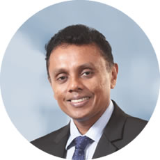
Mr P Roshan Kaluarachchi
Chief Customer Officer
Mr Kaluarachchi joined SLT in 2010 as Chief Marketing Officer. He is a Chartered Marketer, holding a Postgraduate Diploma in Marketing – CIM, a Fellow of Chartered Institute of Marketing (FCIM), and a Fellow of The Sri Lanka Institute of Marketing (FSLIM). He is a Fellow of the Certified Professional Managers, Sri Lanka (FCPM). He holds a Master’s in Business Studies from the University of Colombo. He is a member of the advisory board of CMO Council, Asia Pacific Region. He is a Board Director of the Chartered Institute of Marketing Sri Lanka Region and had been a judge at the SLIM Brand Excellence Awards. Currently, he is reading for PhD in Management and Business Studies at the University of Colombo.
He is a veteran in the field of Marketing and Business Management with over 24 years of practice in the entire spectrum of Marketing, Sales Management, and Strategic Business Management in both multinational and blue-chip Companies in Sri Lanka. He has cross-industry experience covering FMCG, Consumer Durables, and over 12 years in telecommunications, both Fixed and Mobile categories in Sri Lanka. He is the Former Chief Marketing Officer at SLT from November 2010 to March 2015. He is also the Chief Executive Officer of SLT Human Capital Solutions (Private) Limited.
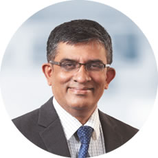
Mr Udeni K Samararatne
Chief Financial Officer
Mr Samararatne is a Member of the Association of Chartered Certified Accountants, UK and the Chartered Institute of Management Accountants, UK. He has over 25 years of extensive experience in finance having worked in both local and international companies such as Richard Pieris PLC, Lanka Ashok Leyland PLC, Noritake Limited of Japan, Ferrero Limited, and Ceat Kelani Holdings Limited. Prior to joining SLT, he was the Group General Manager – Finance of Ceat Kelani Holdings Limited group of companies. He also holds an MBA from the SBS Swiss Business School, Zurich, Switzerland.
Ms Indrani Hissalle
Chief Human Resources Officer
She joined SLT in 1993 and after obtaining professional qualifications as a Chartered Engineer in 1998, she diverted her career path towards management and administration as Regional Telecommunication Engineer. She was promoted as the Head of Sabaragamuwa Province and during her eight years of service she improved staff productivity and customer satisfaction levels.
Ms Hissalle was the Human Resources Management Gold winner at the 7th Professional and Career Women’s awards.
She is a executive member of Association of Human Resource Professionals.
Ms Hissalle is a recognised speaker at IQPC International Quality & Productivity Centre and a visiting lecturer of University of Peradeniya since year 2006. The corporate trainings received on coaching, solving human and organisational problems and industrial and labour laws made her success in Human Resources Management. She is a well-recognised social worker in International Rotary world and currently appointed as the Secretary of Rotary E-club Infinity. Currently, she is engaged with a Postgraduate education on Employment Relationships with the International Labour Organisation.
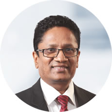
Mr D W R Wijeweera
Chief Information Officer
Mr Wijeweera joined SLT in 1982. He was appointed as Head of the Billing Division in 2001 and thereafter CIO of SLT in 2005. He is a member of The Institution of Engineers Sri Lanka (IESL), IET (UK) and CSSL. He has been involved in key IT projects providing the strategic IT road map for SLT. As the Programme Manager, Mr Wijeweera implemented the Integrated OSS and BSS which was later integrated with the CRM system.
At present, Mr Wijeweera is the project sponsor for implementing the Master Data Management System (MDM), CRM implementation, and Service-Oriented Architecture implementation framework in the SLT IT landscape.
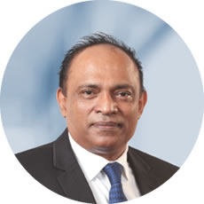
Mr Chinthaka C Wijesuriya
Chief Regional Officer
Mr Wijesuriya joined SLT in 1984 and served as Regional Head in 2001 prior to his appointment as Chief Regional Officer of SLT in 2010. He obtained Graduate membership of Radio and Electronic Engineers (London, UK) and became a Chartered Engineer of the Institution of Electrical Engineers (London, UK). He is a Member of the Association of Professional Engineers Scientists and Managers Associations in Australia and holds an MBA (Technical Management) from La Trobe University of Australia. He has wide experience in the telecommunications industry, in areas such as Operations, Maintenance, Sales, Marketing, Customer Service, Quality Management, and Project Management.
He also functions as a Non-Executive Director of SLT Services Limited since 2016. He has made immense contribution to the New Generation Network (NGN), Sri Lanka Backbone Network (SLBN), Fibre To The Home (FTTH), 4G LTE, National Broadband Programme (i-Sri Lanka) project of SLT.
Mr Imantha Wijekoon
Chief Sales Officer
Mr Wijekoon is a Chartered Engineer with a Degree in Electronics and Telecommunication Engineering from the University of Moratuwa. In addition, he holds an MBA from the Postgraduate Institute of Management of University of Sri Jayewardenepura. In his career at SLT spanning over 22 years, he has gained extensive exposure in the fields of Regional Operations, Project Management, and Consumer and SME sales Operations. He has previously held a number of senior positions which include Head of Province, Deputy Head of Regions, General Manager – Customer Service Centres, and General Manager – Metro Region. Mr Wijekoon counts over 10 years of experience in consumer sales segment.
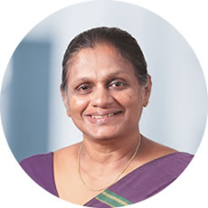
Mrs Geetha Indrani Samaratunga
Chief Logistics Officer
Mrs Samaratunga was appointed as Chief Logistics officer since November 2017. She held a number of senior positions in SLT, including Deputy Chief Logistics Officer/General Manager (Procurement) from 2014 to 2017 and Deputy Chief Admin Officer/General Manager (Administration) from 2008 to 2013.
She has the experience in Global arena working as Head of Division-Global Business Development from 2006 to 2008. During that period she served as Member of the procurement Group of SEA ME WE 4 submarine cable project. She was appointed as a committee member of Bharat Lanka undersea cable project between India and Sri Lanka and a committee member of Dhiraggu Sri Lanka undersea cable project between Maldives and Sri Lanka. She has been working as General Manager-Projects since 2002 to 2006. She has the regional experience as she held the positions of Deputy General Manager (Western, North Central and North Western) Provinces. She was the head of EDCF (Economic Development Cooperation Funded) project during the period from 1998 to 2001. Her vast experience in different arena includes as DGM/Datacom, DGM/P&AC and Chief Engineer-Switching counts more than 34 years of experience in various senior positions in the Company.
Mrs Samaratunga holds a Bachelor of Engineering Degree in Electronics and Telecommunication Engineering from the University of Moratuwa. She is a Chartered Engineer and a fellow member of Institution of Engineers in Sri Lanka.
Leadership team – Subsidiaries
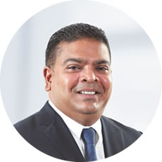
Mr Nalin Perera
Chief Executive Officer, Mobitel (Private) Limited
A dynamic catalyst in Sri Lanka’s Mobile Telecommunications space, Mr Perera has powerfully influenced the industry’s landscape and evolution, cementing his credentials as an industry veteran and front liner. In a stellar career spanning three decades with leading international and local telecoms, his professional growth and success in the Mobile Telecommunication industry is synonymous with the industry’s rise to prominence.
A versatile leader, Mr Perera played a crucial role in pioneer operator Celltel’s introduction of mobile telephony to Sri Lanka in 1989, rising rapidly within the Millicom Group to General Manager-Sales and Marketing within a short period of time. The launch of the Mobile Pre-Paid concept and its business model in Sri Lanka can be directly attributed to Mr Perera’s unique brand of leadership. An irrepressible ideas man, he has subsequently revolutionised the industry with innovative value added services and enterprise business solutions.
An inspirational leader, Mr Perera functions as the Chief Executive Officer of Mobitel, powering the Company from one milestone to the next as one of the most profitable and successful Mobile Service Operators. He was appointed as Chief Marketing Officer and Chief Operating Officer at Mobitel previously.
Mr Perera possesses strong insights into brand management, product and channel development and human resource management, leveraging on a wealth of experience in the mobile telephony industry, while having insights on the pulse of key stakeholders and changing customer behaviours. His vibrant leadership has earned Mobitel a host of local and international awards and accolades over the years.
Mr Perera holds a Postgraduate Diploma in Marketing (UK) and is a Chartered Marketer (UK). He earned a Master of Business Studies from University of Colombo. He is also a well recognised sports personality in the country.
Mr Ajantha Seneviratne
Chief Executive Officer, SLT VisionCom (Private) Limited
Mr Seneviratne joined SLT in 1993. He holds a BSc in Electronics and Telecommunications from the University of Moratuwa and a Postgraduate Diploma in Industrial Engineering from OUSL. In addition, he holds an MBA from the University of Sri Jayewardenepura. He is a Chartered Engineer and a member of The Institution of Engineers Sri Lanka as well. He counts over 15 years of experience in marketing. He is also the Chief Executive Officer of SLT VisionCom (Private) Limited.
Mr Prabath Gunathunge
Chief Executive Officer, SLT Property Management (Private) Limited, Sri Lanka Telecom (Services) Limited
Mr Gunathunge is a Civil Engineer graduated from University of Moratuwa in 1993. Prior to his present assignment, with Sri Lanka Telecom, he was the General Manager of Walkers Pilling PLC. Further to that, he has obtained an MBA from the Postgraduate Institute of Management in 2000.
Throughout his inspiring management career, he has served for both public and private sector companies over 25 years. As the key attainments in his professional expedition, he initiated his management career as a Business Development Manager at EDS Lanka and subsequently, as a General Manager in Sri Lanka State Trading Corporation. Moreover, while using his proficiency in Sales and Marketing field, he also performed as the Director Sales in Colombo Communication. With his unwavering efforts to expand the exposure and persuade individuals, he became the Country Director/ Technical Representative of USAEP – Sri Lanka of Technology Corporation, funded by USAID Washington, DC and then the CEO of Business Learning Centre.
Presently, Mr Gunathunge functions as the Chief Executive Officer of Sri Lanka Telecom (Services) Limited and has steered the company to derive and generate profits to SLT, whilst adding values to the Group synergy.
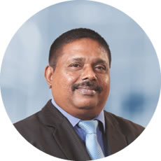
Mr Malraj Balapitiya
Chief Executive Officer, SLT Digital Services (Private) Limited
Mr Balapitiya is a Chartered Engineer and a Fellow of the Institution of Engineers Sri Lanka. He counts over 34 years of work experience at various strata of the SLT administration and has swiftly climbed the corporate ladder from Technical Officer to Regional Telecom Engineer, the Head of the Province, and the General Manager prior to his appointment as the CEO of SLT Publications (Private) Limited.
He is a dynamic personality with managerial, marketing, and entrepreneurial skills and has helped Rainbow Pages to reach the highest echelons to become the only directory publisher recognised by the Government of Sri Lanka.
Owing to his strong expertise and experience in the local search and media space and his networking in South Asia, he has been appointed a Member of the Board of Trustees of the Asian Local Search and Media Association.
In 2011, he was appointed as the CEO of SLT VisionCom (Private) Limited, in addition to his present position of the CEO of SLT Publications (Private) Limited, he has used his marketing skills and charisma to augur support for the SLT network to push PEO TV to greater levels of productivity and make it a viable and dynamic entity that has made a significant impact on the Pay TV industry in Sri Lanka.
Today, both Rainbow Pages and PEO TV are thriving businesses that earn substantial revenue for the SLT Group.
Mr P Roshan Kaluarachchi
Chief Executive Officer, SLT Human Capital Solutions (Private) Limited
Mr Kaluarachchi joined SLT in 2010 as Chief Marketing Officer. He is a Chartered Marketer, holding a Postgraduate Diploma in Marketing – CIM, a Fellow of Chartered Institute of Marketing (FCIM), and a Fellow of The Sri Lanka Institute of Marketing (FSLIM). He is a Fellow of the Certified Professional Managers, Sri Lanka (FCPM). He holds a Master’s in Business Studies from the University of Colombo. He is a member of the advisory board of CMO Council, Asia Pacific Region. He is a Board Director of the Chartered Institute of Marketing Sri Lanka Region and had been a judge at the SLIM Brand Excellence Awards. Currently, he is reading for PhD in Management and Business Studies at the University of Colombo.
He is a veteran in the field of Marketing and Business Management with over 24 years of practice in the entire spectrum of Marketing, Sales Management, and Strategic Business Management in both multinational and blue-chip Companies in Sri Lanka. He has cross-industry experience covering FMCG, Consumer Durables, and over 12 years in telecommunications, both Fixed and Mobile categories in Sri Lanka. He is the Former Chief Marketing Officer at SLT from November 2010 to March 2015. He is also the Chief Executive Officer of SLT Human Capital Solutions (Private) Limited.
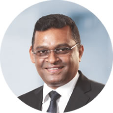
Mr Ranjith Ganganath Rubasinghe
Founder President/Chief Executive Officer, Sri Lanka Technological Campus
Mr Rubasinghe has been with Sri Lanka Telecom for over 15 years and holds a wealth of experience in the fields of Organisational Development, Telecommunication and IT, Human Resources, and Marketing. He has served as the Vice-President of the Institution of Engineers Sri Lanka (IESL). Mr Rubasinghe has also served as a Council Member of the University of Colombo and the Council of the Board of Management at University of Colombo School of Computing.
With an MBA from the University of Colombo, a Postgraduate Diploma in Electronics and Telecommunications Engineering, and a BSc Engineering in Electrical and Electronics, Mr Rubasinghe is a Chartered Engineer and a Fellow of the Institution of Engineers Sri Lanka (IESL), Certified Member of the Sri Lanka Institute of Marketing (SLIM), and an Associate Member of the Institute of Personnel Management (IPM).
He is the Founder President and CEO of Sri Lanka Technological Campus (SLTC), the first and only fully residential, research-based, Engineering University in Sri Lanka.
Mr Rubasinghe held the positions of Chief Executive Officer of Mobitel (Private) Limited (June 2014-October 2015). Founder CEO of SLT Manpower Solutions (Private) Limited (2008–2015), which he transformed into SLT Human Capital Solutions (Private) Limited in 2013, and he served as head of section “Rainbow Pages” (2006-2008).
Among his personal achievements, he was awarded the Chartered Engineer of the Year 2011 at IESL’s Engineering Excellence Awards and the “HR Leadership Award” at the Global HR Excellence Awards 2010 and 2013.